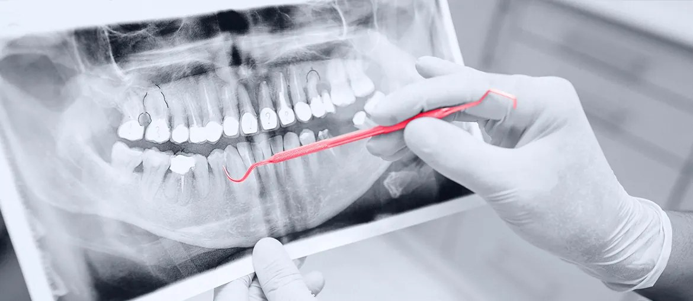

Map the clinical start path
Cover supported phones, tablets, Wi-Fi states, firmware versions, urgent starts, and cases where a clinician cannot pause.
Proposal brief for Clarius Mobile Health
We saw Clarius hiring bilingual inside sales reps across Canada. As more clinicians enter the funnel, the app and scanner path must stay calm, clear, and ready for each first scan.
This hiring signal says Clarius is pushing mobile ultrasound into more regions and buyer groups. That brings new device mixes, languages, support paths, and field promises back to the product team. Public reviews praise image quality, but Android users call out Wi-Fi pairing, forced updates, crashes, and slow help during live care. If those moments slip, strong sales work can turn into support load instead of trusted repeat use.
We would start with a dedicated mobile QA and product squad under your product and manufacturing engineering leads.
Cover supported phones, tablets, Wi-Fi states, firmware versions, urgent starts, and cases where a clinician cannot pause.
Test login, pairing, scan start, annotations, cloud upload, export, and forced-update fallback paths before each release.
Add device matrices, crash triage, network replay, and clear gates before clinical users get updates in new regions.
Pilot checks for T-Mode, Bladder AI, and measurement tools with approved test data and repeatable image cases.
Elinext is a full-cycle software development company, active since 1997, with about 700 in-house specialists and no freelancers. For Clarius, the fit is regulated software, mobile QA, AI engineering, and secure delivery. Elinext holds ISO 9001 and ISO 27001, which matters when patient data, device workflows, and release control meet. We would work as a remote extension of your team, with clear ownership and weekly evidence. That keeps IP and product calls inside Clarius while outside capacity removes release risk.

Long-running healthcare SaaS work with CFR-compliant file hosting, multitenant systems, and live clinical collaboration needs.
View case study
Healthcare image work using YOLO and Python, close to the validation mindset needed for AI-assisted imaging.
View case study